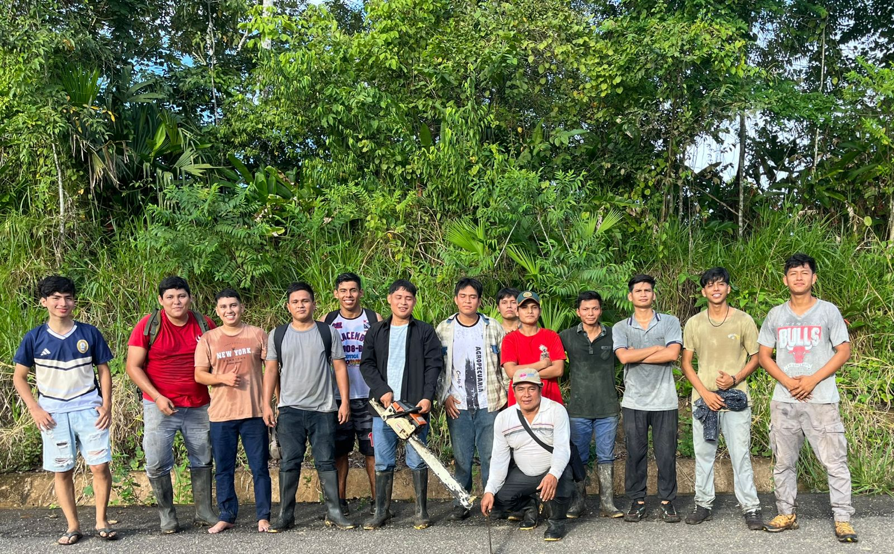

Este proyecto busca enfrentar la contaminación mediante la construcción de malocas educativas y el uso de tachos ecológicos elaborados con botellas plásticas y códigos QR.
El proyecto "Falta de soluciones frente a la contaminación: unión de malocas y reciclaje" surge desde la Facultad de Ciencias de la Educación y Humanidades de la UNAP con el propósito de fortalecer la conciencia ecológica y la responsabilidad ambiental en el campus. La iniciativa contempla la instalación de 10 tachos de reciclaje para la correcta separación de residuos y el uso de 5 malocas como espacios de encuentro, capacitación y sensibilización, donde estudiantes y docentes promueven prácticas sostenibles y el compromiso colectivo frente a la contaminación.
Asimismo, este proyecto se plantea como una acción de bienestar universitario que beneficia directamente a las demás facultades, como FACEN, FCF y FE, al fomentar un entorno más limpio, ordenado y saludable. Con ello, se busca consolidar una cultura ecológica que integre educación, participación comunitaria y sostenibilidad, generando impacto positivo en toda la comunidad académica.
El cambio climático es una realidad que afecta a todos. Cada acción cuenta: reducir, reciclar y reutilizar son pasos esenciales para salvar nuestro planeta. La unión de la comunidad en torno a la educación ambiental es la clave para construir un futuro sostenible.
Los tachos ecológicos no son solo recipientes: son símbolos de conciencia. Estos tachos están destinados exclusivamente para residuos sólidos no orgánicos tales como plástico, vidrio, papel y metales. Con códigos QR, cada tacho se convierte en un recurso educativo que conecta a las personas con mensajes y reflexiones ambientales, promoviendo una gestión integral de residuos.
📧 Correo: proyectounap2026@gmail.com
📞 Teléfono: 914408706
"En Contamana, cada aula y cada maloca se convierten en semillas de conciencia. Educar en medio de la selva es también educar para protegerla."
"Los ríos y bosques de Contamana nos recuerdan que la vida depende de nuestro cuidado. Cada botella reciclada es un gesto de respeto hacia nuestra tierra."
"Cuando Contamana se une, la esperanza florece. La contaminación no se vence con palabras, sino con acciones compartidas."
"El futuro de Contamana no está escrito en papeles, sino en la manera en que cuidamos nuestros tachos, reciclamos y enseñamos a los niños a amar la naturaleza."
"Somos hijos de la Amazonía. En Contamana, proteger el ambiente es proteger nuestra propia identidad."